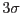

XMM-Newton Science Analysis System
ewavelet (ewavelet-3.11.2) [xmmsas_20170112_1337-16.0.0]
From version 2.0 on ewavelet
uses the fast Fourier transform (FFT)
to convolve images with the wavelet filter and the background images
with other smoothing filters. For small wavelet scales direct convolutions
are still used. The FFT routines are those of the external fftw package.
Care is taken that the input images are only once transformed and stored,
in order to avoid unnecessary calls to the FFT routines.
The Fourier Transforms of the Mexican hat function and the background smoothing
functions are calculated directly using the analytical expressions for those
functions (rather than using a FFT).
The direct convolution (small wavelet scales only)
uses a window size of approximately
. A smaller window size decreases the computational effort at the
expense of the convolution accuracy. (Note that for a two dimensional Gaussian
function  does not correspond to a fraction of 99.73%, but to
98.9%.)
Figure 3:
The response of a Gaussian source (dotted line) to
the convolution of the image with the background smoothing function.
The dashed line shows
the function itself and the solid line shows the response to a Gaussian
(
).
The Gaussian has been multiplied by a factor 1/5.
|
XMM-Newton SOC/SSC -- 2017-01-12